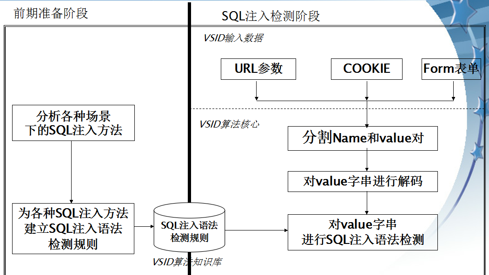

注入攻击可以分为好多种，日志注入、html注入（xss）、sql注入等，本文主要讨论sql注入
套用知乎网友的一段回来来阐述sql注入形成的本质原因：
没有运行时编译，就没有sql注入
之所以会产生sql注入，就是因为sql引擎将sql操作逻辑语句和用户提交的参数一起编译，而用户恶意提交的数据可能会 改变sql语句的逻辑，让sql引擎把用户提交的参数也当做sql的语义要素考虑进来，从而导致sql引擎没有正确区分sql代码和用户数据，从而产生了超出原有逻辑的结果
网上常说的sql注入的原因诸如：sql语句拼接，改变了sql逻辑，核心原因就是上面所阐述的
1)从类型上分类
- I、盲注
盲注(blind sqlinjection)
盲注也是注入的一种，但是不能像平常那样，通过页面的显示来获取数据,盲注的世界里只有true和false
盲注的类型。
攻击者根据其返回页面的不同来判断信息(可能是页面内容的不同，也可以是响应时间不同)。一般情况下，盲注可分为三类。
布尔类型 boolean-baesd
: 基于布尔的盲注，即可以根据返回页面判断条件真假的注入。
报错类型 error-based
基于报错注入，即页面会返回错误信息，或者把注入的语句的结果直接返回在页面中。
时间类型 time-based
:基于时间的盲注，即不能根据页面返回内容判断任何信息，用条件语句查看时间延迟语句是否执行（即页面返回时间是否增加）来判断。
- II、非盲注
诸如联合查询注入，可以使用union的情况下的注入。堆查询注入，可以同时执行多条语句的执行时的注入。(需要数据库或者数据库驱动支持，譬如oracle就不支持堆查询，PDO_Mysql支持)
2)从数据提交的方式分类
I、GET 注入
即：将注入的代码附加在URL 查询参数中
II、POST注入
即：将注入代码注入到POST提交的数据参数中
III、header 注入
即：将注入的代码附加在HTTP请求的头字段值中，如cookie注入就是header注入的一种，其他的注入x_foward注入等(这和具体的server处理逻辑有关联)
一个能够常年把持 OWASP 十大安全威胁的漏洞，危害自不必多言。常见但不限于的危害有
1、数据库信息泄漏：数据库中存放的用户的隐私信息的泄露获取数据库信息 (拖库，你懂得)
数据库信息都有了，密码在手，天下我有啊，直接杀入后台，爱干嘛干嘛2、写入webshell，拿下网站
如果权限合适，站库没有分离，即可写入webshell
譬如mysql select xxx into outfile 写入webshell 等
3、提权
mysql UDF 提权，如果mysql 数据库运行权限又比较好，呵呵，拿下主机root 都是有可能的
sqlserver 的xp_cmdshell 提权，臭名昭著 ，你懂得
oracle 中的java 存储过程提权（前提是有合适的权限，如create any directory 权限等）
4、读取系统敏感文件
只要权限合适，则可利用数据库函数如mysql 的load_file() 和load data infile xxx into 读取 /etc/passwd 等系统敏感文件
**5、网页篡改：通过操作数据库对特定网页进行篡改 **
6、网站被挂马，传播恶意软件：修改数据库一些字段的值，嵌入网马链接，进行挂马攻击
7、数据库被恶意操作：数据库服务器被攻击，数据库的系统管理员帐户被窜改
8、服务器被远程控制，被安装后门。经由数据库服务器提供的操作系统支持，让黑客得以修改或控制操作系统
9、破坏硬盘数据，瘫痪全系统
一些类型的数据库系统能够让SQL指令操作文件系统，这使得SQL注入的危害被进一步放大
1、 严格限定参数类型
对于只能接受整数型的参数，要禁止字符串参数的提交，譬如php中的intval()函数就可以进行变量类型的转换，将提交的参数全部转换成整型
警告
一定要后台限制，前端限制靠不住
2、限定参数的长度
一般的sql注入，其注入代码逻辑都比较长，根据系统业务的情况，合理限定参数长度能一定程度上的阻碍sql注入
警告
一定要后台限制，前端限制靠不住
3、参数化查询
也可以称为预编译，将sql操作逻辑实现编译好，然后执行的时候，将参数传入即可，这样就不会让用户提交的参数值影响到sql的逻辑，即避免了sql的拼接
参数化查询也一定程度上提高了性能，一次编译，多次传参执行，节省了每次都编译的资源消耗
oracle中的变量绑定也是一种参数化查询，不仅安全，而且性能好
强烈建议开发人员所有的查询SQL操作都使用数据库提供的参数化查询接口，参数化的语句使用参数而不是将用户输入变量嵌入到SQL语句中,当前几乎所有的数据库系统都提供了参数化SQL语句执行接口，使用此接口可以非常有效的防止SQL注入攻击。
4、合理过滤
- I 替换关键字、特殊字符(如php的str_replace函数)
- II 转义特殊字符(如php的mysql_real_escape_string、addslashes等函数)
- III 黑名单（容易被绕过）、白名单(适合业务变化不大的场景)
- IV 编码特殊字符
5、屏蔽出错信息
- 避免网站显示SQL错误信息，比如类型错误、字段不匹配等，防止攻击者利用这些错误信息进行一些判断
- 这样就会阻碍一些利用报错注入的sql注入
6、统一编码
网站每个数据层的编码统一，建议全部使用UTF-8编码，上下层编码不一致有可能导致一些过滤模型被绕过
8、在系统发布前，做好安全性测试
1、GET、POST Form Fields in web forms
2、HTTP HEADER 如cookie、x_forward
3、/?id=xx& Script parameters in URL query strings
4、搜索框 (like 注入)
5、Values stored in cookies or hidden fields
6、利用google hack 定位可能产生注入的站点
如 site:xxx.com inurl:index.php?id=
1、基于特征码的检测
优点：高效
缺点：易被绕过
2、基于异常行为的检测
缺点：只适合业务变化不大的场景，而且需要很长时间的样本学习
3、基于SQL注入语（句）法的检测方法 Venus SQL Injection Detection Algorithm (VSID算法)：
一种误用检测方法，为各种SQL注入方法建立SQL注入语法模型，通用性非常强.SQL注入手法多变，但万变不离其踪：注入部分必须（部分或全部)符合SQL语法!
分析各种可能的SQL注入方法，为各种SQL注入方法建立SQL注入检测语法，所有SQL注入检测语法集合称为VSID算法误用检测模型
实际运行时，根据先前建立的误用检测模型检测来自URLCOOKIEPOST-Form中的各参数域值是否包含SQL注入语法，如果包含则表示检测到了SQL注入攻击
主要SQL注入源
URL (login.jsp?name=xxx&pass=xxx)
COOKIE (SID=xxx&field=xxxx)
POST-Form（包括隐含域) (name=xxx&pass=xxx)
三种SQL注入源都具有相同的参数格式:Name=Value&Name=Value
VSID算法负责检测Value中是否包含SQL注入语法
优点：
无需学习过程，无需动态建立正常行为模型，无需频繁更新误用检测模型
基于SQL注入语法分析方法，可以成功检测出绝大多数针对攻击特征匹配的躲避技术
VSID算法支持非常复杂的SQL语法检测，中高级水平的SQL注入攻击检测成功率极高
挑战：
与其它SQL注入检测算法一样，VSID算法只是实现对SQLIA攻击企图的检测。如果要实现对SQL注入攻击结果的检测，则需要考虑上下文关联问题： 如果检测到HTTP-Response中包含了特殊SQL数据库的错误码，则肯定发生了SQL注入 结合上下文分析，比如：如果知道abc.asp存在SQL注入攻击漏洞，现在检测到了对abc.asp输入参数的SQL注入攻击企图，则本次攻击肯定是成功的。 行为模式分析：一个Web应用的SQL注入漏洞一般存在于一个或几个URL上，黑客会反复使用这几个URL。
目前只考虑单个域的SQL注入检测，马上要考虑跨域SQL注入检测，比如Name=‘ declare /, pass=/ @var int
需要为不同的数据库类型进行语法定义